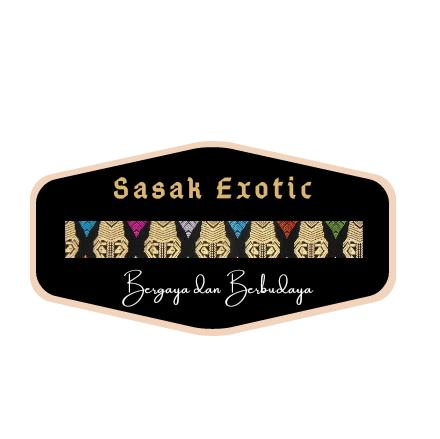

<p>
    
    Sasak Exotic berdiri pada tangga 25 oktober 2018, awal mula berdirinya ini dikarenakan adanya sebuah pesantren di lombok 
    yang mendirikan pondok berbasis bisnis. para santri di ajarkan bagaimana berbisnis dan bagaimana cara membangun bisnis sambil menghafal Al-Qur'an
    Sasak Exotic adalah sebuah tempat jual beli online maupun offline di lombok, Sasak Exotic menjual berbagai macam Marchendise dari lombok.
    seperti kain tenun Lombok, kaos lombok, dan kerajinan tangan yang lainnya.
    Sasak Exotic juga saat ini sudah mempunyai sebuah tempat untuk pembelian tiket pesawat dan paket wisata lombok.
    tapi untuk saat ini Sasak Exotic masih berfokus pada penjualan kain tenun dan kerjainan tangan yang berasal dari lombok.
        Lombok merupakan tempat wisata yang sudah bertaraf internasional, sehingga mau tidak mau UMKM disana harus berkembang
        untuk menunjang para wisatawan agar mudah menemukan oleh-oleh dari lombok. Lombok juga terkenal dengan sebutan pulau 1.000 masjid
        karena memang betul adanya, di Lombok kita dapat dengan sangat mudah menemukan masjid, oleh karena itu banyak wisatawan 
        yang memilih berlibur ke lombok.

</p>



</body>